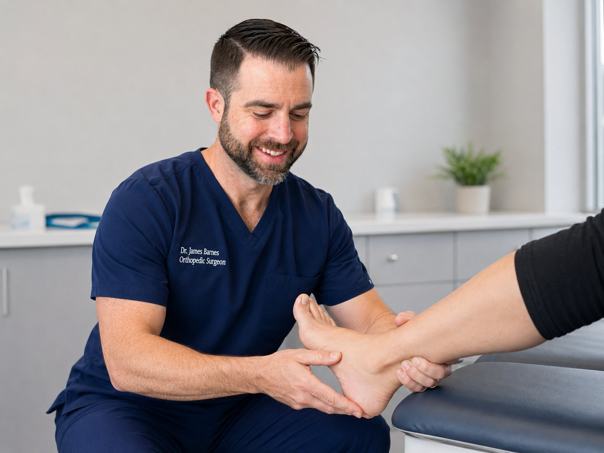
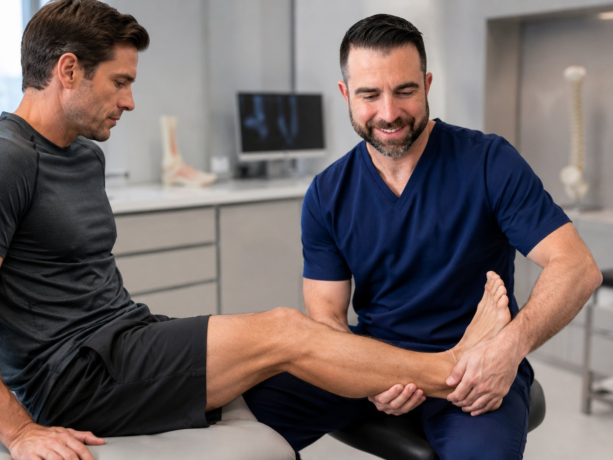
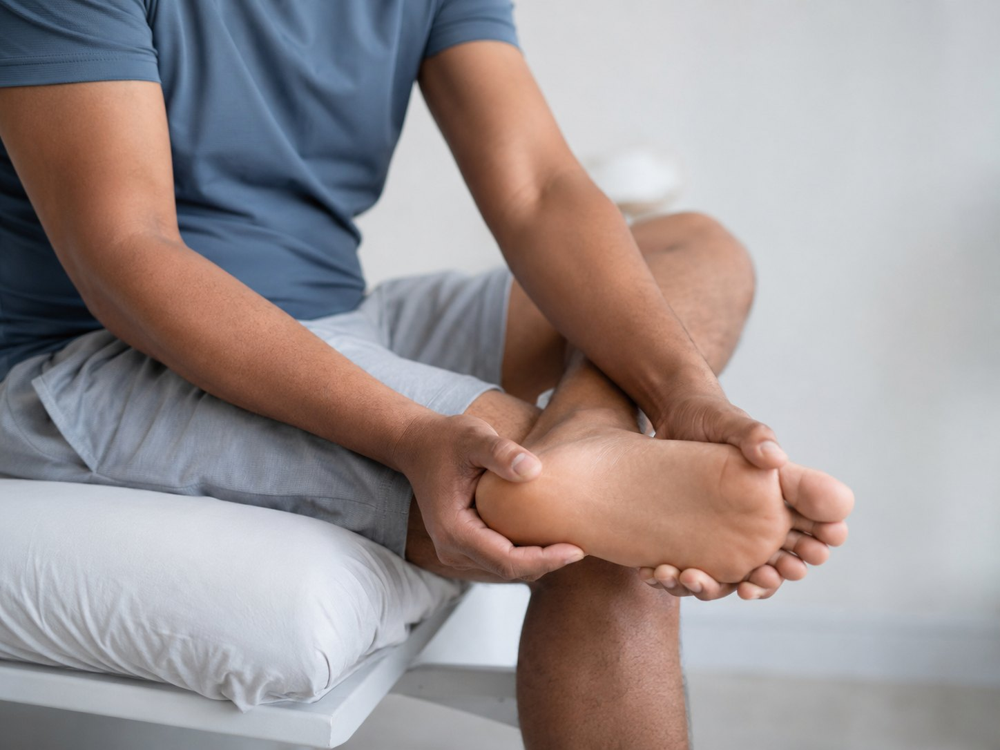
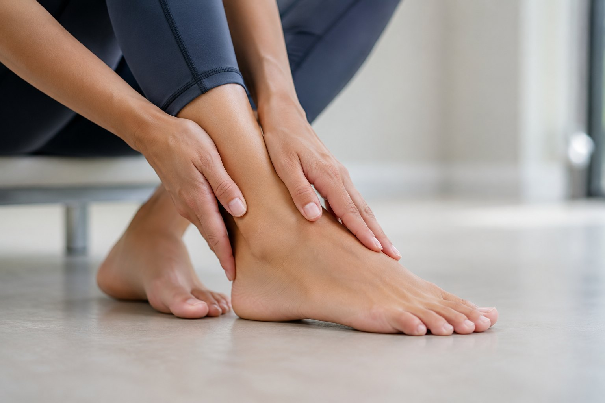
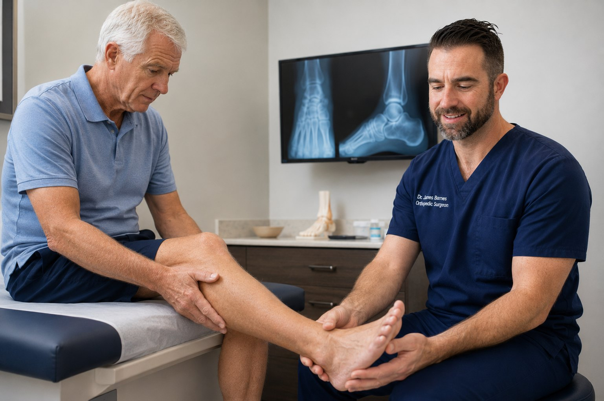
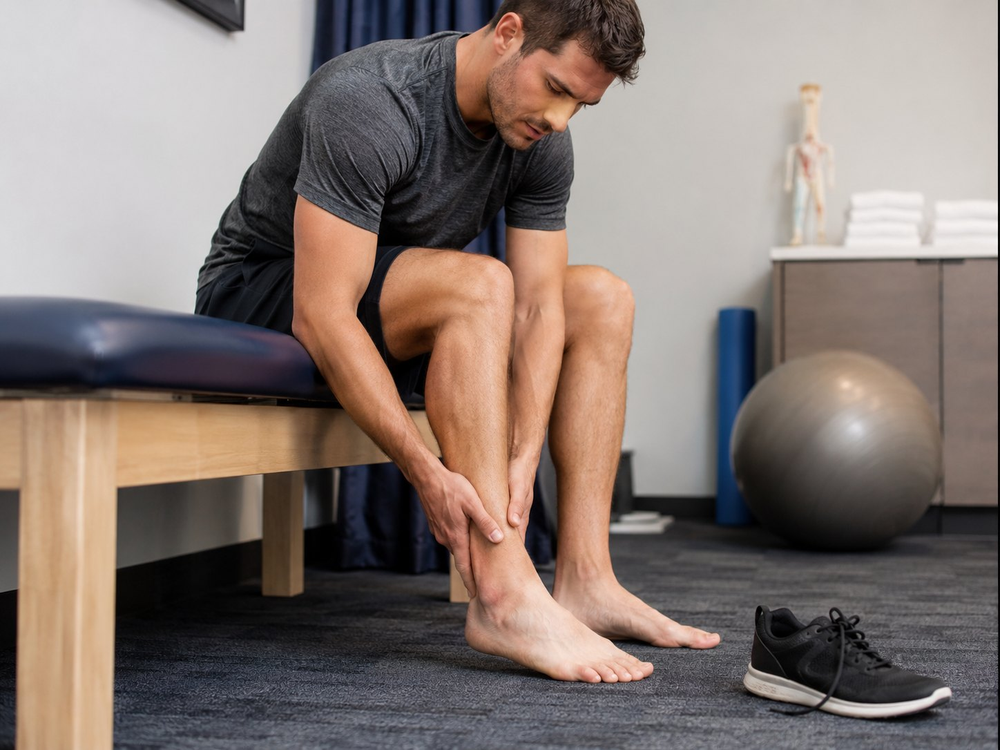
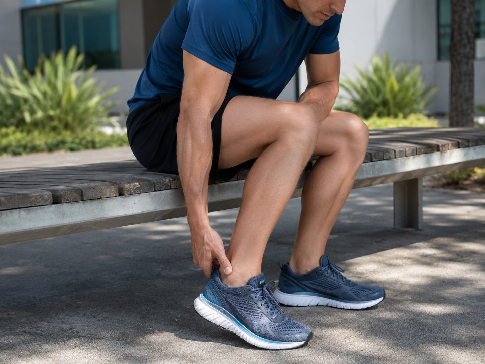
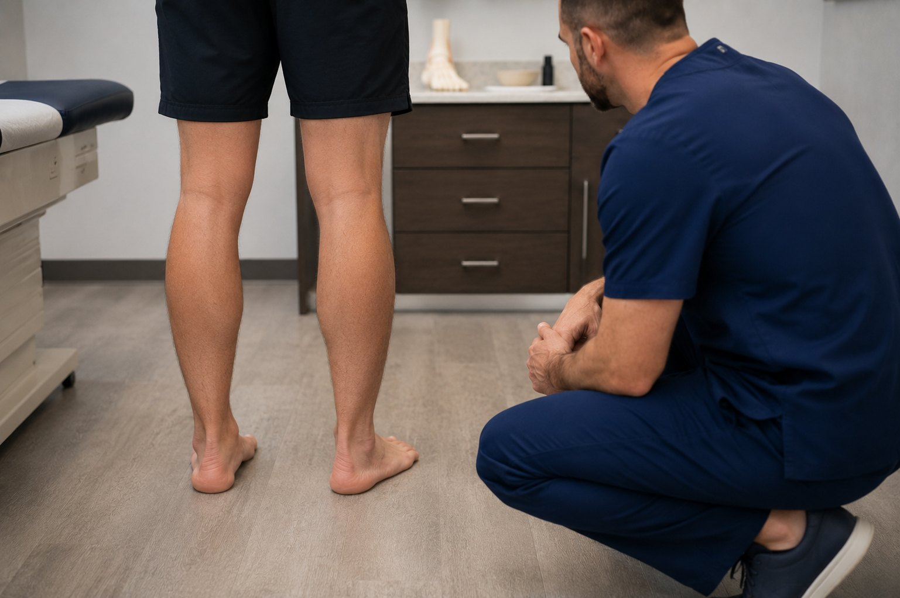
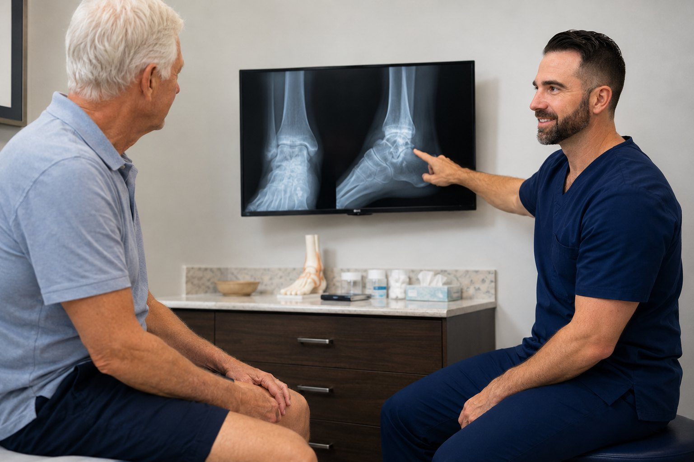

Ankle sprains
For swelling, bruising, instability, difficulty bearing weight or sprains that are not improving.
Evaluation and treatment for ankle sprains, fractures, Achilles problems, heel pain, tendon injuries, ankle arthritis and sports-related foot and ankle concerns in Lake Havasu City.
This page is intentionally focused on the type of foot and ankle problems that overlap with orthopedic surgery, sports medicine, fracture care and return-to-activity treatment.

For swelling, bruising, instability, difficulty bearing weight or sprains that are not improving.

Evaluation for twisting injuries, overuse pain and return-to-play questions.

Plantar fasciitis, Achilles insertion pain and pain with the first steps of the day.

Pain after an old sprain, stiffness, swelling or pain that keeps recurring.
Foot and ankle pain can come from bone, cartilage, ligaments, tendons, nerves, footwear, training load or prior trauma. The goal is to identify the source of pain, explain what is going on, and match treatment to your activity goals.

Most foot and ankle conditions start with nonoperative care when it is safe and reasonable.
Some conditions need imaging review, protection, closer follow-up or a surgical discussion.

Fractures may need a boot, splint, cast, restricted weight-bearing or surgery depending on alignment and stability.

Arthritis after injury or years of wear can cause stiffness, swelling and pain with walking or uneven ground.

Selected tendonitis and alignment-related pain can be evaluated; complex deformity may require referral.

An injured ankle in a competitive athlete, a painful heel in a nurse on her feet all day, and ankle arthritis in a retiree who wants to keep walking the island path all deserve different conversations.
Simple answers to common patient questions.
Schedule an evaluation if you cannot bear weight, have marked swelling or bruising, have visible deformity, have bone tenderness, or are not clearly improving over several days. Persistent instability or repeat sprains also deserve evaluation.
No, but many should be checked. X-rays are more important when there is inability to bear weight, significant swelling, bone tenderness, deformity, or pain that does not improve as expected.
Yes, plantar fasciitis and heel pain can be evaluated from an orthopedic standpoint. Treatment commonly starts with stretching, shoe-wear changes, activity modification, therapy, night splints or injections when appropriate.
No. I do not provide elective bunion or hammertoe correction. If that is the main problem, a podiatrist or foot-and-ankle specialist who routinely manages those conditions is usually a better fit.
No. I do not provide routine diabetic foot care, nail care, callus care or diabetic wound management. Those concerns are usually better managed by podiatry, wound care, primary care or vascular specialists depending on the issue.
Bring prior X-rays, MRI reports, operative notes, injection records, therapy notes, your brace or boot if you have one, and the shoes you most often wear for the activity that causes pain.
Sometimes. A boot can protect fractures, severe sprains, tendon injuries or painful inflammatory conditions, but it is not needed for every foot and ankle problem.
Surgery is considered when the diagnosis, imaging, symptoms and goals line up — for example an unstable fracture, a tendon rupture, severe instability, or pain that has not improved despite appropriate nonoperative treatment.
An X-ray may be appropriate after a twisting injury when there is bony tenderness, inability to bear weight, significant swelling, deformity, or concern for fracture. Persistent pain after a presumed sprain also deserves reassessment.
A “sprain” may hide a fracture, tendon injury, cartilage injury, syndesmosis injury, or instability problem. Red flags include inability to bear weight, worsening swelling, bruising up the leg, numbness, deformity, or pain that does not improve as expected.
Many patients describe a pop, snap, or feeling as if someone kicked the back of the ankle. Weak push-off, difficulty walking, and inability to do a single-leg heel rise are concerning signs that should be evaluated promptly.
Initial care often includes calf stretching, supportive shoes, activity modification, ice massage, anti-inflammatory strategies when appropriate, and sometimes night splints or therapy. Heel pain that persists or does not fit the usual pattern should be evaluated.
Surgery depends on alignment, joint involvement, instability, displacement, soft-tissue condition, patient health, and functional goals. Some fractures are treated with a boot or cast; others need fixation to restore alignment and stability.
Referral may be best for complex deformity, advanced reconstruction, revision surgery, severe diabetic foot problems, complex ankle replacement questions, or problems outside the scope of general orthopedic foot and ankle care.
Schedule an orthopedic evaluation with Dr. Barnes in Lake Havasu City.